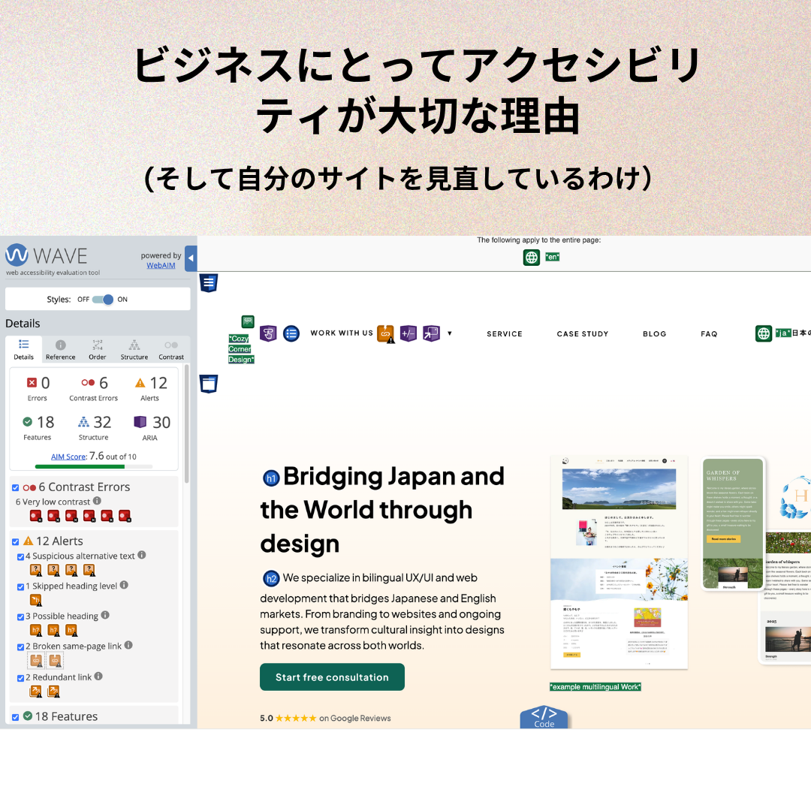
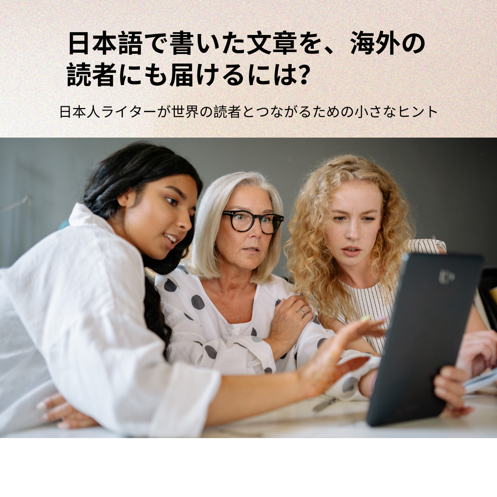

アクセシビリティ Part 2：ホームページを見直して気づいたこと
キーボード操作、VoiceOver、拡大表示、モバイル確認を通じて見えてきたこと。普段の操作だけでは気づきにくい課題と、そこから学んだことをシェアしています。
続きを読む May 22, 2026
アクセシビリティは「ルール」ではなく、分かりやすさや使いやすさに関わるものです。自分のサイトをなぜ、どのように見直しているか、そのプロセスを正直にシェアしています。
続きを読む April 27, 2026
日本語で書いた文章を、海外の読者にも届けてみたい。そんな日本人ライターのために、世界の読者とつながる小さなヒントをまとめました。
続きを読む March 20, 2026海外向けサイトを作るべきか迷っている方へ。どんな人に必要なのか、多くの人がつまずくポイント、迷いを整理する考え方を簡単に解説します。今の状態を確認できるチェックリスト付き！
続きを読む February 20, 2026英語にしたのに、なぜか反応がない。そんな違和感を感じている方へ。海外向けサイトでつまずきやすいポイントと、翻訳の前に整理しておきたい「設計の考え方」を簡単に解説します。
続きを読む January 23, 2026
この記事では、ウェブサイトにおける日英のホリデー戦略の違いを比較し、世界で勝てるグローバルサイトを構築するための実践的なヒントをご紹介します。
続きを読む December 19, 2025
英語と日本語の理想的な行長を比較し、デバイスや文字構造、レイアウトの読みやすさにどう影響するかを簡単に紹介します。
続きを読む November 26, 2025
日本と欧米では「何を先に見せるか」の感覚が違います。多言語サイトで信頼を築くためのナビゲーション設計術を紹介します。
続きを読む September 30, 2025
英語圏のユーザーが安心して利用できる英語サイトを作るためのポイントと、文化の違いを活かしたデザイン戦略を紹介します。
続きを読む August 22, 2025
日本と欧米のユーザーがウェブサイトをどう使い分けているのか、そしてなぜデザインの工夫が重要なのかを探ります。
続きを読む July 25, 2025